Dosen Pengampu: Dr. Dani Ramdani S.Pd., M.Pd.
Kelompok 3:
1. Dea Aprilia (242154111007)
2. Salsabila Farhana (242154111049)
3. Melani Destiny (242154111050)
Pilih topik untuk langsung menuju materi:
Jaringan tulang tersusun atas matriks dan sel terspesialisasi:
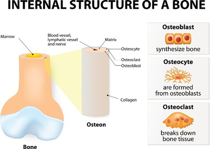
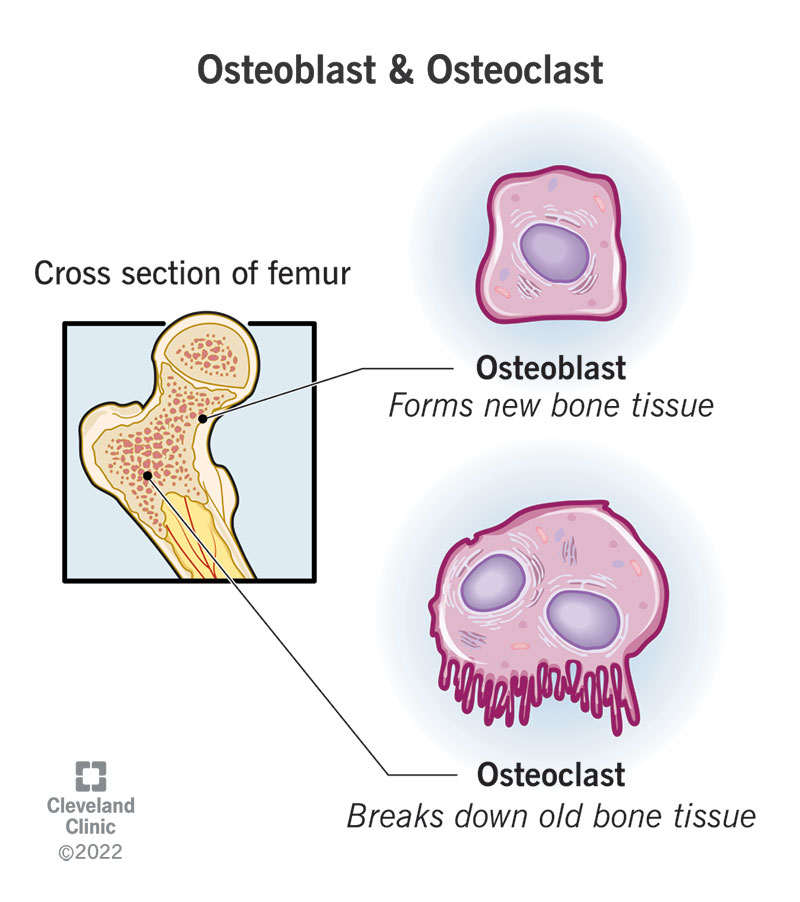
Osifikasi adalah mekanisme penulangan jaringan rangka:
Terbentuk langsung dari jaringan mesenkim embrional tanpa tulang rawan. Terjadi pada tulang pipih tengkorak & klavikula:
Pembentukan tulang menggantikan cetakan kartilago hialin:
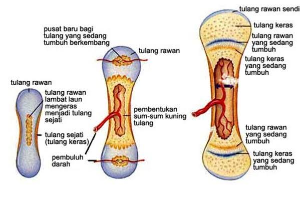
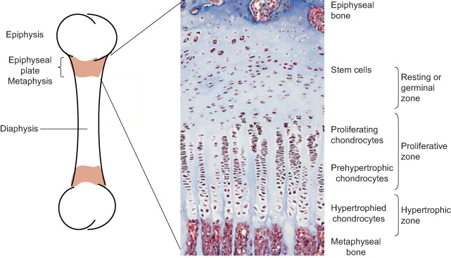
Tulang panjang memiliki bagian anatomi spesifik:
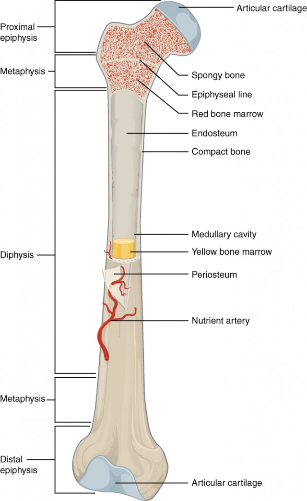
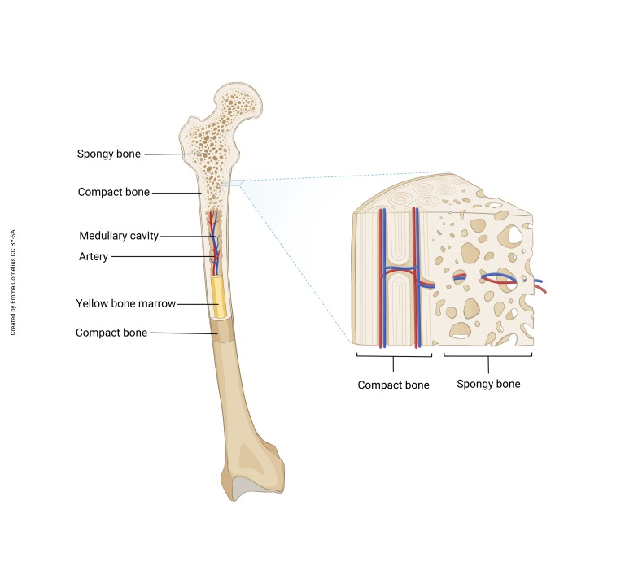
Kerangka aksial merupakan bagian rangka yang membentuk sumbu utama tubuh dan berfungsi menopang tubuh serta melindungi organ-organ vital. Kerangka aksial terdiri atas:
Melindungi otak dan membentuk struktur kepala serta wajah. Terdiri atas:
Berfungsi menopang tubuh, mempertahankan postur, mendukung pergerakan, dan melindungi medula spinalis. Terdiri atas 33 vertebra, yaitu 7 servikal, 12 torakal, 5 lumbal, 5 sakral yang menyatu, dan 4 koksigeal yang menyatu.
Toraks (Sangkar Dada) merupakan bagian dari rangka aksial yang membentuk rongga dada. Toraks terdiri atas 12 vertebra torakal, sternum, 12 pasang tulang rusuk (costae), dan kartilago kostalis. Struktur ini berfungsi melindungi jantung dan paru-paru serta membantu proses pernapasan.
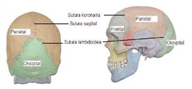
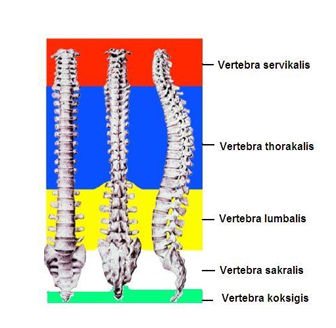
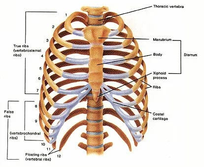
Rangka apendikular merupakan rangka manusia yang menghubungkan tulang anggota gerak atas dan bawah beserta gelang bahu dan gelang panggul yang menghubungkannya dengan rangka aksial. Pada manusia dewasa terdapat 126 tulang yang berfungsi sebagai alat gerak pasif, mendukung lokomosi, dan menjaga keseimbangan tubuh.
Terdiri atas klavikula dan skapula. Berfungsi menghubungkan ekstremitas atas dengan rangka aksial serta memungkinkan pergerakan tangan secara luas.
Terdiri atas ekstremitas atas dan bawah dengan total 120 tulang. Berfungsi untuk memegang, mengangkat, berjalan, dan berpindah tempat.
Terdiri atas dua os coxae yang tersusun dari ilium, ischium, dan pubis. Berfungsi menyangga berat tubuh, menyalurkan beban ke ekstremitas bawah, serta menjaga stabilitas dan keseimbangan.
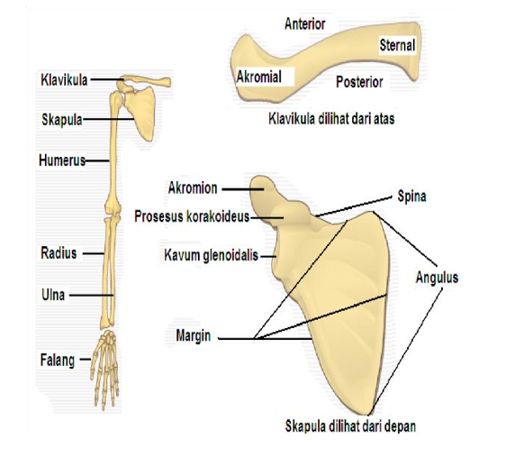
Remodeling Tulang: Pembongkaran matriks tua (Osteoklas) dan pembentukan tulang baru (Osteoblas).
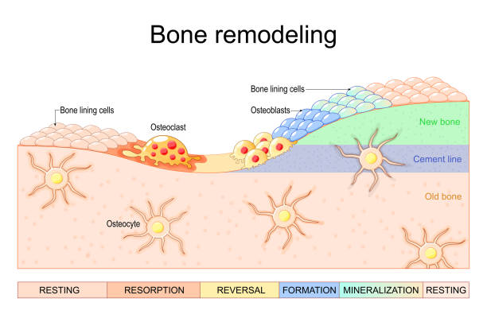
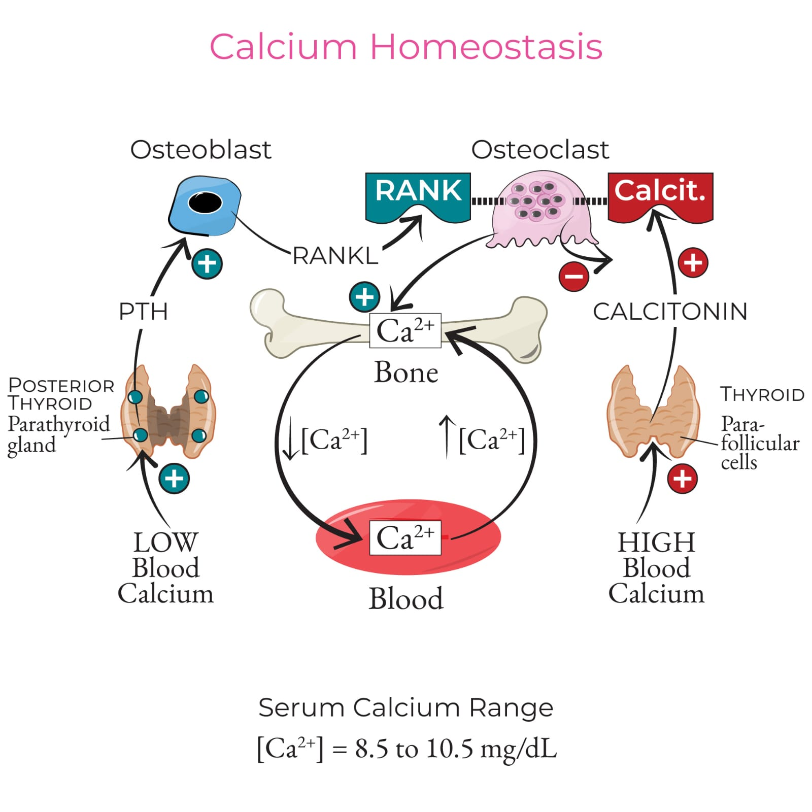
Sendi (Artikulasi) dikelompokkan berdasarkan struktur penyambungnya:
1. Sendi Engsel (Ginglymus) | 2. Sendi Putar (Pivot) | 3. Sendi Peluru (Ball and Socket)
4. Sendi Kondiloid (Ellipsoid) | 5. Sendi Pelana (Saddle) | 6. Sendi Geser (Plane/Gliding)
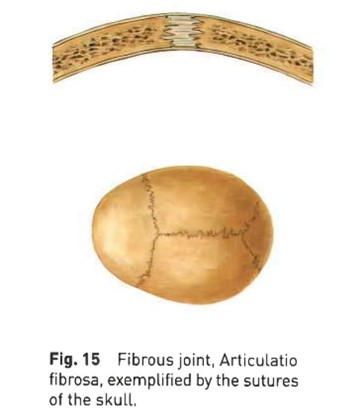
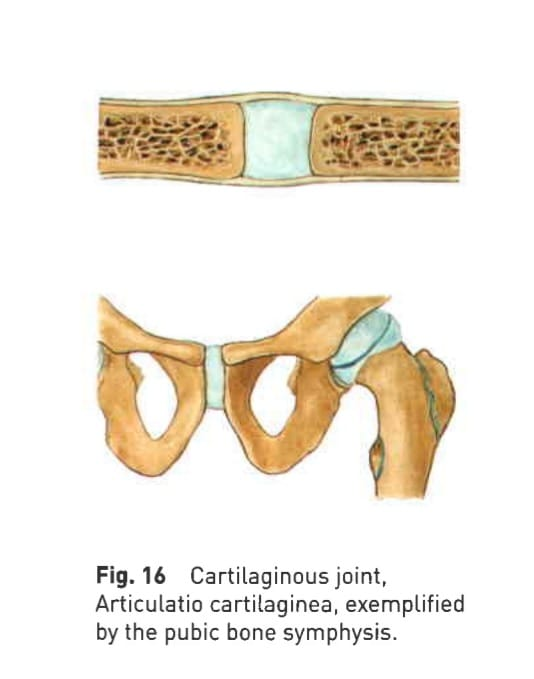
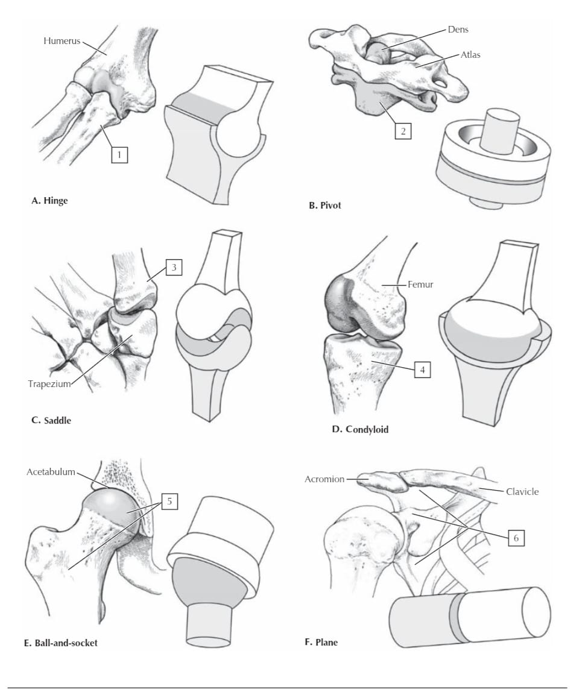
Sendi sinovial memungkinkan pergerakan mekanis spesifik tubuh:
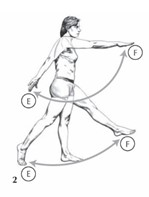
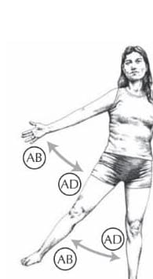
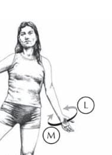
Patologi klinis pada sistem rangka:
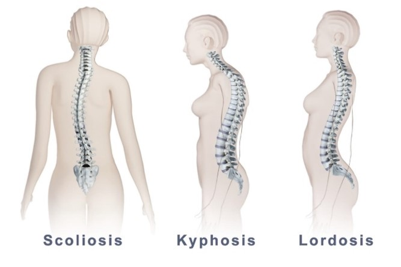
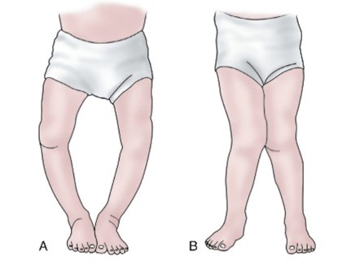
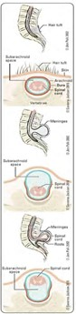
"Anatomi dan fisiologi adalah fondasi untuk memahami betapa sempurnanya rancangan tubuh manusia."